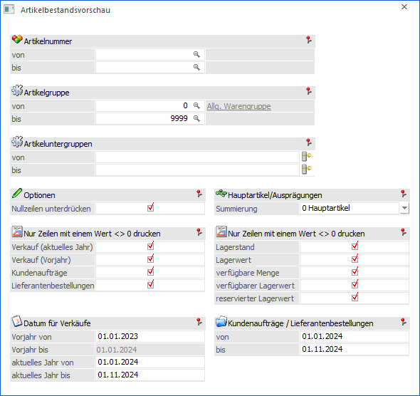
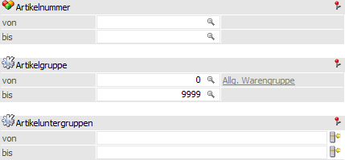
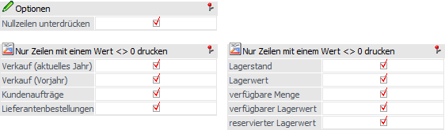
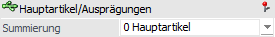
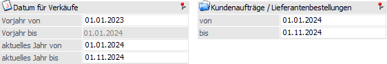
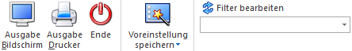

Die Artikelbestandsliste gibt eine Übersicht über Bestände, Verfügbarkeiten und Umsätze aller Artikel aus. Der Aufruf erfolgt über den Menüpunkt…
1 WinLine FAKT
1 Auswertungen
1 Statistik
1 Artikelbestandsvorschau

Für die Ausgabe stehen folgende Selektions- und Einstellungsmöglichkeiten zur Verfügung:
Grundselektion

Ø Artikelnummer / Artikelgruppe / Artikeluntergruppe
In den Eingabefeldern von - bis kann jeweils eine Einschränkung auf die Artikel bzw. auf die Artikelgruppen und Artikeluntergruppen vorgenommen werden, die ausgewertet werden sollen.
Hinweis
Wird im Eingabefeld Artikelnummer von - bis nur eine einzelne Artikelnummer eingegeben und dieser Artikel besitzt Ausprägungen, werden alle Ausprägungen automatisch mit angedruckt. Soll nur der Hauptartikel für sich ausgewertet werden, kann dies mit Drücken der STRG-Taste beim Anklicken des "Ausgabe-Buttons" realisiert werden.
Optionen

Ø Nullzeilen unterdrücken
Wird die Checkbox "Nullzeilen unterdrücken" aktiviert, werden keine Artikel ausgegeben, die noch keine Bewegungen aufweisen. Die Art der Bewegung kann über die nachfolgenden Checkboxen konkret eingestellt werden. Diese Option wird benutzerspezifisch gespeichert.
Ø Nur Zeilen mit einem Wert <> 0 drucken
Mit Hilfe der Checkboxen kann ausgewählt werden, dass nur Zeilen mit Werten ungleich Null angedruckt werden. Werden alle Checkboxen ausgewählt, werden alle Artikel angezeigt, die nicht in allen Spalten einen Nullwert aufweisen, d. h. es wird jeder Artikel angezeigt, der in einer dieser Spalten einen Wert ungleich 0 aufweist.
Hauptartikel/Ausprägungen

Ø Summierung
Über die Option "Summierung" kann gesteuert werden, welche Artikelzeilen summiert werden sollen und dadurch in die Gesamtsumme mit einfließen.
ü 0 - Hauptartikel
Es werden nur
die Hauptartikelzeilen summiert und in die Gesamtsumme eingerechnet.
ü 1 - Ausprägungen und
Zwischenartikel
Es werden alle Ausprägungen summiert und in die Gesamtsumme
eingerechnet.
ü 2 - Ausprägungen der untersten
Ebene
Mit dieser Option werden nicht aufgeteilte Hauptartikel und die
Ausprägungen der untersten Ebene, ohne die Zwischenartikel, summiert und in die
Gesamtsumme eingerechnet. Dies betrifft die Belegwerte (Verkäufe, Bestellungen).
Beim Lagerstand werden nur die Ausprägungen summiert.
Hinweis
Bei der Auswertung werden sowohl bei den Hauptartikeln als auch bei den Ausprägungen immer alle Werte angezeigt, wenn die Erfassung über das Fenster "Ausprägungen erfassen" stattgefunden hat. Sollten die Artikelausprägungen direkt erfasst worden sein z. B. über die Autovervollständigung oder den Artikelmatchcode, dann werden die Werte lediglich bei den Ausprägungen dargestellt.
Datum für Verkäufe und Kundenaufträge/Lieferantenbestellungen

Ø Datum für Verkäufe
Durch Eingabe der entsprechenden Daten kann festgelegt werden, welcher Zeitraum für das Vorjahr bzw. für das aktuelle Jahr ausgewertet werden soll.
Ø Kundenaufträge / Lieferantenbestellungen
Eingabe eines Zeitraumes für welchen Kundenaufträge bzw. Lieferantebestellungen berücksichtigt werden sollen.
Buttons

Ø Ausgabe Bildschirm
Über den Button "Ausgabe Bildschirm" oder der Taste F5 wird die Auswertung auf den Bildschirm ausgegeben.
Ø Ausgabe Drucker
Durch die Anwahl des Buttons "Ausgabe Drucker" wird die Auswertung auf den Drucker ausgegeben.
Ø Ende
Über den Button "Ende" bzw. der Taste ESC wird das aktuelle Fenster geschlossen.
Ø Voreinstellung speichern
Durch Anwahl dieses Buttons erfolgt eine benutzerspezifische Speicherung aller im Fenster getätigten Einstellungen. Diese sogenannten "Voreinstellungen" können jederzeit wieder abgerufen werden und ermöglichen dadurch ein schnelleres und zielorientierteres Arbeiten (nähere Informationen entnehmen Sie bitte dem Kapitel "Die Voreinstellungen").
Mit Hilfe des Filter-Buttons kann auf die Werte der Artikelstammdatenview (V021) selektiert bzw. eingeschränkt werden. Dabei können z. B. auch hinterlegte Artikel-Eigenschaften als Einschränkungsparameter herangezogen werden.